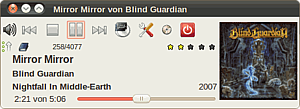
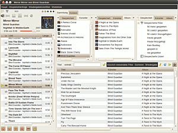

Gmusicbrowser
Dieser Artikel wurde für die folgenden Ubuntu-Versionen getestet:
Ubuntu 16.04 Xenial Xerus
Ubuntu 14.04 Trusty Tahr
Zum Verständnis dieses Artikels sind folgende Seiten hilfreich:
Gmusicbrowser  ist ein Jukebox-Programm zum Abspielen von Audio-Dateien. Das Programm kann auch zur Verwaltung von Musiksammlungen genutzt werden. Dabei helfen Funktionen wie das Editieren von Tags oder das Herunterladen und Zuweisen von Cover-Bildern. Die Funktion als Icecast-Server ist derzeit noch experimentell. Das Programm ist vergleichbar mit Amarok oder Rhythmbox. Ab Ubuntu 11.04 ist Gmusicbrowser der Standard-Audioplayer von Xubuntu (vorher wurde Exaile genutzt).
ist ein Jukebox-Programm zum Abspielen von Audio-Dateien. Das Programm kann auch zur Verwaltung von Musiksammlungen genutzt werden. Dabei helfen Funktionen wie das Editieren von Tags oder das Herunterladen und Zuweisen von Cover-Bildern. Die Funktion als Icecast-Server ist derzeit noch experimentell. Das Programm ist vergleichbar mit Amarok oder Rhythmbox. Ab Ubuntu 11.04 ist Gmusicbrowser der Standard-Audioplayer von Xubuntu (vorher wurde Exaile genutzt).
Eine leicht abgewandelte Version wurde vom Shimmer Project veröffentlicht. Diese Version hat einen eigenen Ansichtsmodus. Zusätzlich wurden einige Veränderungen und Verbesserungen an der Oberfläche vorgenommen. Siehe hierzu auch die Vorstellung im Forum.
Installation¶

Das Programm ist in den offiziellen Paketquellen enthalten. Dabei handelt es sich um die Variante des Shimmer Projects. Es kann über das folgende Paket installiert [1] werden:
gmusicbrowser (universe)
 mit apturl
mit apturl
Paketliste zum Kopieren:
sudo apt-get install gmusicbrowser
sudo aptitude install gmusicbrowser
PPA¶
Eine stets aktuelle Version findet man im "Personal Package Archiv" (PPA) [3] von Andreas Böttger .
Adresszeile zum Hinzufügen des PPAs:
ppa:andreas-boettger/gmusicbrowser-daily
Hinweis!
Zusätzliche Fremdquellen können das System gefährden.
Ein PPA unterstützt nicht zwangsläufig alle Ubuntu-Versionen. Weitere Informationen sind der  PPA-Beschreibung des Eigentümers/Teams andreas-boettger zu entnehmen.
PPA-Beschreibung des Eigentümers/Teams andreas-boettger zu entnehmen.
Damit Pakete aus dem PPA genutzt werden können, müssen die Paketquellen neu eingelesen werden.
Nach dem Aktualisieren der Paketquellen erfolgt die Installation wie oben angegeben – das PPA wird allerdings erst genutzt, wenn man zusätzlich eine Änderung der Priorität der Paketquelle für Gmusicbrowser vornimmt.
Dazu ist mit Root-Rechten die Datei /etc/apt/preferences.d/andreas-boettger_gmusicbrowser-daily-ppa-pin mit folgenden Inhalt anzulegen [3][4]:
Package: * Pin: release o=LP-PPA-andreas-boettger-gmusicbrowser-daily Pin-Priority: 1001
Weiterführende Informationen befinden sich im Artikel Apt-Pinning.
Bedienung¶
 Das Programm ist bei Ubuntu-Varianten mit einem Anwendungsmenü unter "Multimedia -> gmusicbrowser" oder "Unterhaltungsmedien -> gmusicbrowser" zu finden [5].
Gmusicbrowser unterscheidet zwischen Wiedergabeliste, Warteliste und Browser. Den Überblick über die eigene Musiksammlung behält man am einfachsten mit dem Browser. Wiedergabe- und Warteliste sind auf den ersten Blick sehr ähnlich. Der entscheidende Unterschied ist, dass Wiedergabelisten permanent sind, während die Warteliste nur temporär ist.
Wiedergabelisten¶
Das Programm führt eine Standard-Wiedergabeliste, die aktiv wird, wenn ein Album oder Künstler aufgerufen wird. Zusätzlich lassen sich beliebig viele eigene Wiedergabelisten erstellen. Unter "Wiedergabenlistenfilter" können die Filter konfiguriert werden.
Warteliste¶
 Um der Warteliste weitere Titel hinzuzufügen, genügt es, das Kontextmenü zu öffnen und dort "Ausgewählte zur Warteliste hinzufügen" zu wählen. Sobald ein Titel in der Warteliste erscheint, wird die aktuelle Wiedergabeliste bei Ende des aktuellen Liedes unterbrochen und die Warteliste abgearbeitet. Sobald ein Titel in der Warteliste abgespielt wurde, wird er aus der Warteliste ausgetragen. Ist die Warteliste leer, wird die unterbrochene Wiedergabeliste fortgesetzt. Sobald man gmusicbrowser beendet, wird die Warteliste gelöscht. Auch hier kann das Verhalten unter "Warteliste" den eigenen Wünschen angepasst werden.
Browser¶
Der Browser dient nur zum Verwalten der Musiksammlung. Hier gesetzte Filter haben keinen Einfluss darauf, welche Stücke abgespielt werden. Dies geschieht erst, wenn man sie in die Wiedergabe- oder Warteliste hinzufügt. Abhängig vom gewählten Layout wird der Browser direkt im Hauptfenster eingeblendet oder als eigenes Fenster gestartet. Der Browser bietet umfangreiche Möglichkeiten, nach den verschiedensten Attributen zu filtern.
Kontextfenster¶
Sofern man die Erweiterungen "Liedtexte" oder "Netzkontext" aktiviert hat (siehe unten), hat man über das Kontextmenü direkt Zugriff auf verschiedene Liedtextseiten, Last.fm und Wikipedia. Wenn man beide aktiviert, erscheint der Reiter Liedtexte doppelt. Wie das Browserfenster lässt sich auch das Kontextfenster entweder als eigenes Fenster öffnen oder in das aktuelle Layout einbinden.
Konfiguration¶
Das Einstellungsmenü bietet verschiedene Reiter, mit denen man gmusicbrowser individuell konfigurieren kann.
Sammlung¶
Hier kann man die Ordner, in denen nach Musik gesucht werden soll, einstellen. Anschließend kann man diese Ordner manuell nach neuen, geänderten oder gelöschten Lieder durchsuchen. Wenn man möchte, kann man diese Suche auch bei jedem Programmstart durchführen lassen. Allerdings verzögert sich der Programmstart dadurch etwas.
"Reorganisiere Dateien und Ordner" ermöglicht es, die Dateien auf der Festplatte neu zu ordnen.
Label¶
Gmusicbrowser bietet neben der klassischen Liedsortierung nach Interpret und Album ein alternatives System. Jedes Lied kann man mit einem oder mehreren Labeln kennzeichnen. Neben den vordefinierten Labeln:
Bonusstücke
Bootleg
Interview
Lieblingsstück oder
defekt
kann man beliebig viele selbst definieren.
Audio¶
Je nach persönlichem Geschmack kann man hier zwischen GStreamer, MPlayer oder den Kommandozeilenprogrammen mpg321, ogg123 sowie flac123 zum Abspielen der Musik wählen.
Layouts¶
Gmusicbrowser bietet viele Möglichkeiten, das Aussehen und Verhalten den eigenen Wünschen anzupassen. Ist man mit den vorgefertigten Layouts nicht zufrieden, kann man auch eigene erstellen . Des Weiteren kann man hier das Verhalten des Leistensymbols und der Vollbildansicht anpassen. Weitere Layouts findet man auf der Projektseite .
Layouts sind auch über ein eigenes PPA erhältlich.
Adresszeile zum Hinzufügen des PPAs:
ppa:andreas-boettger/gmusicbrowser-art
Hinweis!
Zusätzliche Fremdquellen können das System gefährden.
Ein PPA unterstützt nicht zwangsläufig alle Ubuntu-Versionen. Weitere Informationen sind der PPA-Beschreibung des Eigentümers/Teams andreas-boettger zu entnehmen.
Damit Pakete aus dem PPA genutzt werden können, müssen die Paketquellen neu eingelesen werden.
Verschiedenes¶
Hier gibt es verschiedene Konfigurationsmöglichkeiten. Die meisten sind selbsterklärend.
Erweiterungen¶
Gmusicbrowser verfügt auch über ein Erweiterungssystem (Plugins). Folgende sind standardmäßig installiert, müssen aber noch aktiviert werden.
"Automatisch speichern" - speichert Einstellungen und Tags automatisch alle x Minuten
"CD rippen" - fügt der Benutzeroberfläche einen Schalter zum direkten Rippen einer CD mittels eines benutzerdefinierten Programms hinzu, wenn das vom verwendeten Layout unterstützt wird
"Cover Suche" - Über einen Rechtsklick auf den Albumnamen kann das passende Cover über einen Internetdienst gesucht und den entsprechenden Liedern zugewiesen werden
"Exportiere" - bietet die Möglichkeit, über einen Eintrag im Kontextmenu
 Lieder auf einen eingebundenen, tragbaren Player zu kopieren, einen benutzerdefinierten Befehl auf markierte Dateien auszuführen oder eine .m3u-Datei der aktuellen Wiedergabelist zu erstellen
Lieder auf einen eingebundenen, tragbaren Player zu kopieren, einen benutzerdefinierten Befehl auf markierte Dateien auszuführen oder eine .m3u-Datei der aktuellen Wiedergabelist zu erstellen "Gnome MMTasten" - integriert Unterstützung für Multimedia-Tastaturen
"Jetzt Läuft" - jeweils zu Beginn eines neuen Lieds einen bestimmten Befehl ausführen
"Last.fm" - erlaubt es, einen Account bei LastFM mit den gehörten Liedern auf dem Laufenden zu halten
"Liedtexte" - sucht auf verschiedenen Liedtextseiten nach den Texten des aktuellen Liedes
"Netzkontext" - erlaubt es, jeweils den passenden Wikipedia, Last.fm-Eintrag oder den Liedtext als zusätzlichen Reiter anzuzeigen
"Notify" - Unterstützung für den Benachrichtigungsdienst von Ubuntu (siehe unten)
Tasten¶
Hier lassen sich die Tastenkombinationen zur mauslosen Steuerung nach eigenem Vorlieben einstellen.
Problembehebung¶
Benachrichtigung¶
Ab Version 1.02 unterstützt gmusicbrowser auch eine Benachrichtigung, vorausgesetzt das Paket libgtk2-notify-perl ist installiert. Das Paket kann einfach installiert werden:
libgtk2-notify-perl (universe)
mit apturl
Paketliste zum Kopieren:
sudo apt-get install libgtk2-notify-perl
sudo aptitude install libgtk2-notify-perl
Anschließend aktiviert man noch "Notify" unter "Einstellungen -> Erweiterungen". Dort kann man die Erweiterung auch konfigurieren. Um eine doppelte Benachrichtigung zu vermeiden, muss man unter "Einstellungen -> Layouts" den Punkt "Leistensymbol bei Liedwechsel anzeigen" deaktivieren.
 Programmübersicht
Programmübersicht- Erstellt mit Inyoka
-
 2004 – 2017 ubuntuusers.de • Einige Rechte vorbehalten
2004 – 2017 ubuntuusers.de • Einige Rechte vorbehalten
Lizenz • Kontakt • Datenschutz • Impressum • Serverstatus -
Serverhousing gespendet von